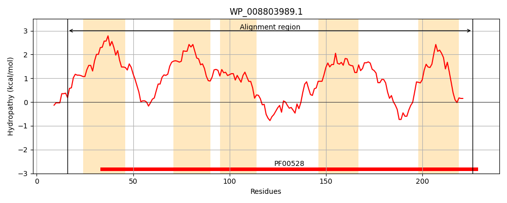
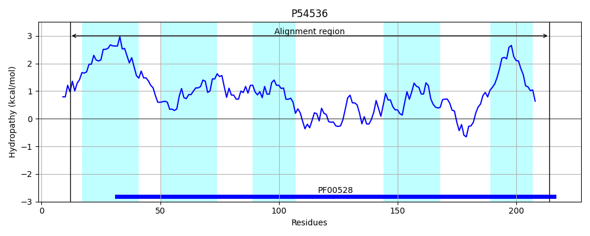
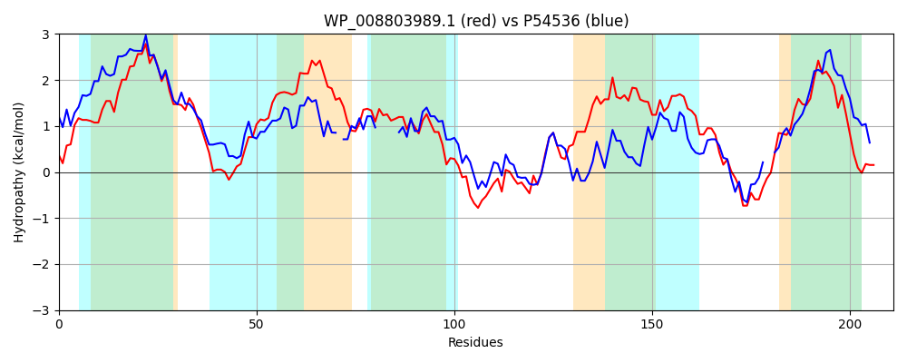

Hit Accession: P54536
Hit TCID: 3.A.1.3.15
Hit Description: gnl|BL_ORD_ID|10943 gnl|TC-DB|P54536|3.A.1.3.15 Probable amino-acid ABC transporter permease protein yqiY - Bacillus subtilis.
Mach Len: 211
e:0.000000
Query TMS Count : 5
Hit TMS Count: 5
TMS-Overlap Score: 4.050000
Predicted Substrates:CHEBI:2643;arginine
BLAST Alignment:
Score: 295 , Bit scores: 118 bits, E-value: 6.9e-33, Alignment length: 211, Percentage identity: 31
Query: 16 LPKLLENLPVTLGITLASLLLGLTIALLIVLLQFSRFKPLSAVANGYTDILRGAPLALLILLFFFGGKLILTALALPPLWISDTTFAVLSISVSISPYFAEMMRSAWRAVDTGQKEAIISLNIPWHKGMLRIIFPQGLIIAIPVFGNLLINLVKMTSLVNIIGIVDIFGRAQKISQNSYGAKQVAAFISVIIVYWVLNSIILYFTTRIEKK 226
+P +LE L +TL I + S ++GL + +++ L + S F+P +A+ YT + RG PL L +++ +FG +L + W AV+++S++ + Y +E++R+ A+D GQKEA ++L +P+ K M ++ PQ P N LI L K +++V +IG+ D+ RA + +Y + I ++Y+VL I+ + +E+K
Sbjct: 12 IPFILEGLAITLKIVVVSAIIGLILGIVLSLCKISTFRPFIWIADFYTSVFRGTPLVLQLMIVYFGLPQLL-GFQIDQFWA-----AVVALSLNSAAYVSEIIRAGINAIDKGQKEAAVALGVPYGKMMKDLLLPQAFKNISPAIVNELITLTKESAIVTVIGLGDVMRRAYQAGAATY--NYLEPLIIAGLIYYVLVLILTFIGKAVERK 214 | Protein Hydropathy Plots: |
|---|
|  |  |
Pairwise Alignment-Hydropathy Plot:
|
|---|
|  |